Home / Past papers / MLP Quiz 2 / this paper
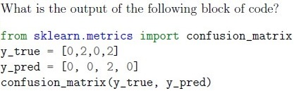
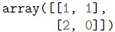
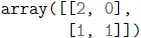
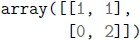
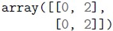
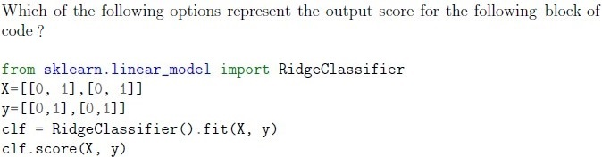
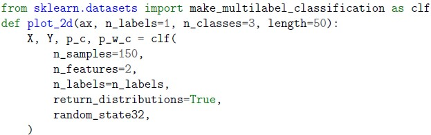
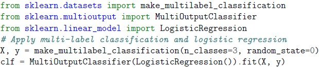
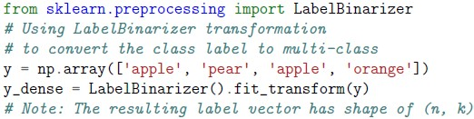
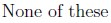
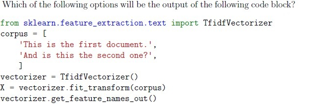
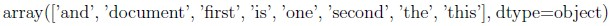
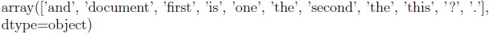
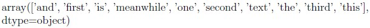
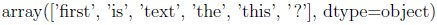
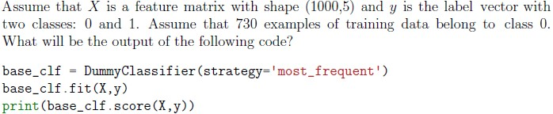
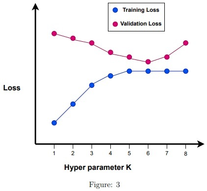
Rakesh is solving a regression problem with a KNN model. He has considered k = 3 for his model. Based on the graph shown below, what would you suggest him out of the following options?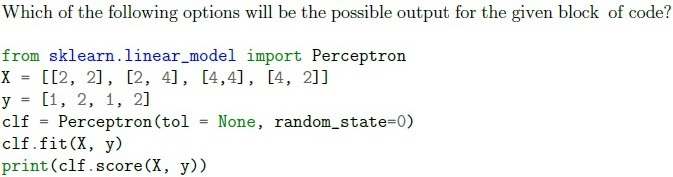
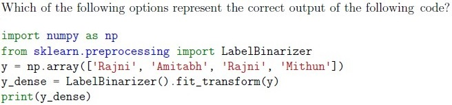
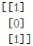
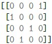
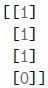
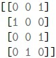
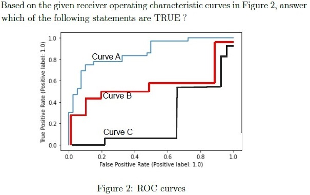
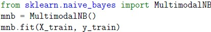
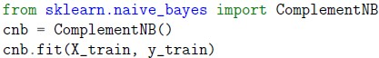
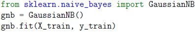
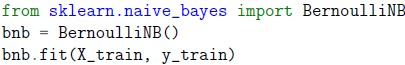
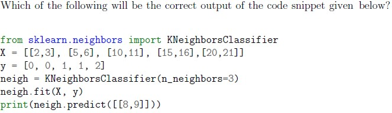
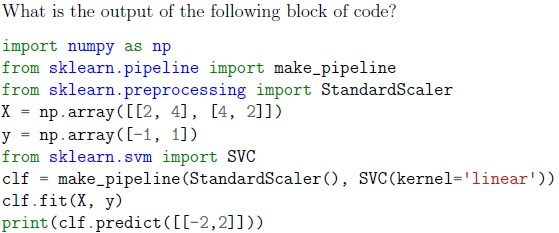
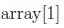
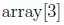
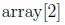
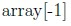
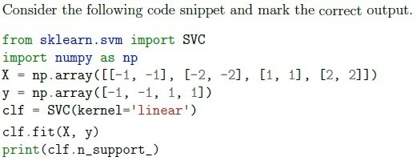
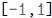
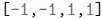
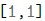
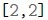
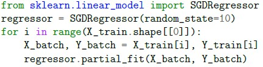
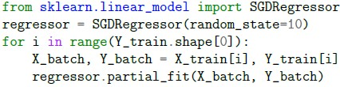
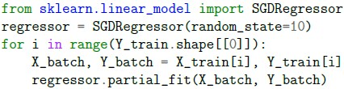
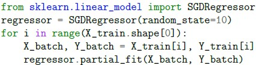
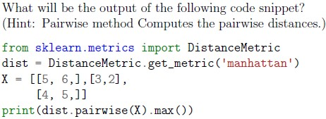
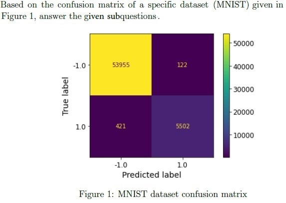
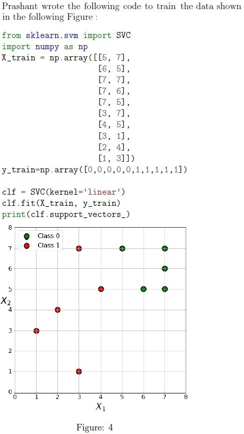
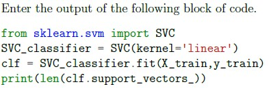